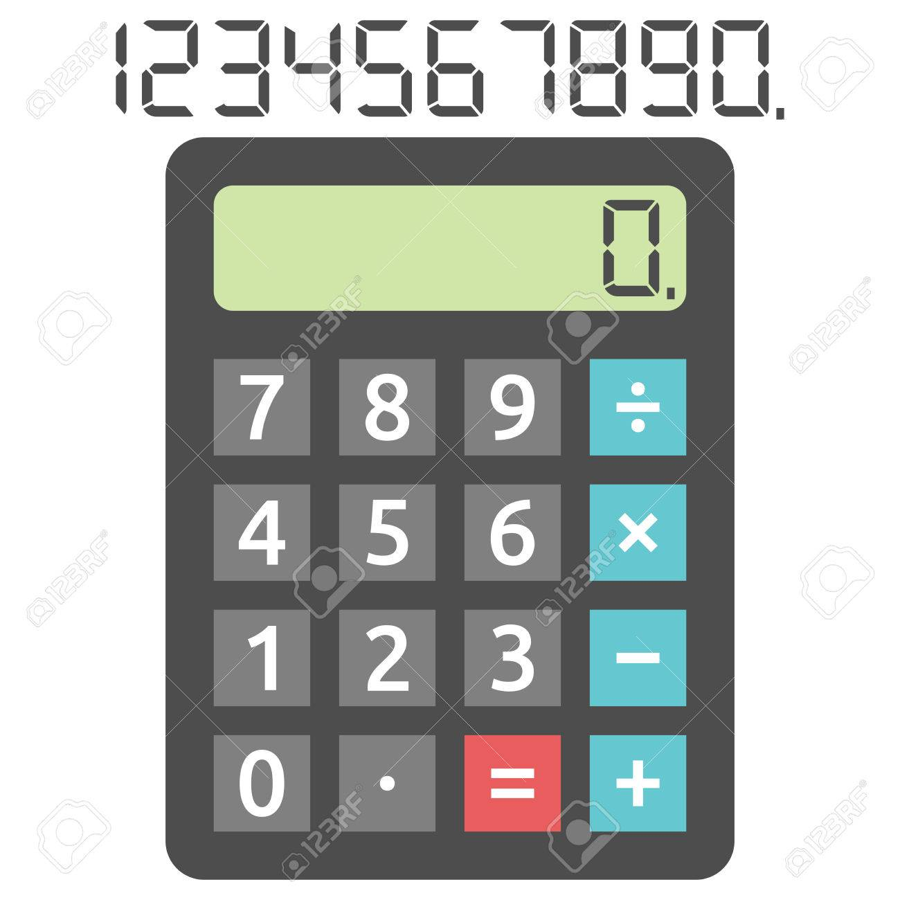

Sin ninguna experiencia de programacion fuera del ITLA he realizado varios proyectos que he podido llevar a flote como:
En Fundamentos de Programacion mi primer proyecto fue una calculadora como bien dice en el titulo. En este proyecto aprendi la logica de programar, este consistia en una calculadora de consola que sumaba, restada, multiplicaba y dividia.
Como trabajo final de cuatrimestre el profesor de materia nos asigno realizar un sistema de facturacion con el lenguaje trabajado en el cuatrimestre (C++), un simple programa de consola que te permitiria agregar, eliminar y/o modificar tus contactos.
Para finalizar con la lista de mis proyectos, para trabajo final de programacion I, realizamos una copia del formulario de admision del ITLA con Windows Form.